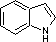
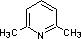
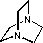
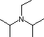
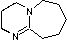
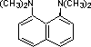

A common method for evaluating the strength of bases is to report the acidities of the conjugate acids of the bases (these conjugate acids are often "onium" cations). The resulting pKa's are proportional to the base strength of the base.
|
Name of Base (B) |
Formula of B |
Ka (BH+) |
pKa |
|---|---|---|---|
|
aliphatic nitro cpd. |
R-NO2 |
ca. 1012 |
ca. -12 |
aryl nitro cpd. |
C6H5NO2 |
ca. 1011 |
ca. -11 |
|
nitriles |
R-C≡N |
ca. 1010 |
ca. -10 |
|
aliphatic aldehydes |
R-CH=O |
ca. 108 |
ca. -8 |
|
aryl aldehydes |
C6H5CH=O |
ca. 107 |
ca. -7 |
|
aliphatic ketones |
R2C=O |
ca. 107 |
ca. -7 |
|
esters |
R-CO2R' |
ca. 3 * 106 |
ca. -6.5 |
|
aryl alkyl ethers |
C6H5OCH3 |
ca. 3 * 106 |
ca. -6.5 |
|
phenols |
C6H5OH |
ca. 3 * 106 |
ca. -6.5 |
|
aryl ketones |
C6H5COCH3 |
ca. 106 |
ca. -6 |
|
carboxylic acids |
R-CO2H |
ca. 106 |
ca. -6 |
|
sulfides |
RSR |
ca. 105 |
ca. -5 |
|
diethyl ether |
C2H5OC2H5 |
ca. 3 * 103 |
ca. -3.5 |
|
dioxane |
O(CH2CH2)2O |
ca. 103 |
ca. -3 |
|
pyran |
(CH2)5O |
ca. 3 * 102 |
ca. -2.5 |
|
tetrahydrofuran |
(CH2)4O |
ca. 102 |
ca. -2 |
|
alcohols |
R-CH2-OH |
ca. 102 |
ca. -2 |
|
aryl amides |
C6H5C(NH2)=O |
ca. 102 |
ca. -2 |
|
indole |
 |
ca. 102 |
ca. -2 |
|
water |
H2O |
55 |
-1.74 |
|
aliphatic amides |
RC(NH2)=O |
3.2 |
-0.5 |
|
dimethyl sulfoxide |
(CH3)2SO |
1 |
0 |
|
phosphine oxides |
R3PO |
1 |
0 |
|
pyrrole |
C4H4NH |
1 |
0 |
|
urea |
(NH2)2C=O |
0.8 |
0.1 |
|
diphenylamine |
(C6H5)2NH |
0.15 |
0.8 |
|
p-nitroaniline |
4-O2NC6H4NH2 |
0.1 |
1.0 |
|
aniline |
C6H5NH2 |
2.5 * 10-5 |
4.6 |
|
trimethylamine N-oxide |
(CH3)3NO |
2.5 * 10-5 |
4.6 |
|
N,N-dimethylaniline |
C6H5N(CH3)2 |
10-5 |
5.1 |
|
pyridine |
C5H5N |
6.3 * 10-6 |
5.2 |
|
hydroxyl amine |
HONH2 |
1.3 * 10-6 |
5.9 |
|
2,6-dimethylpyridine |
 |
2.0 * 10-7 |
6.7 |
|
imidazole |
10-7 |
7.0 |
|
|
hydrazine |
H2NNH2 |
10-8 |
8.0 |
|
alkyl phosphines |
R3P |
10-8 |
8.0 |
|
aziridine |
10-8 |
8.0 |
|
|
2,2,2-trifluoroethylamine |
CF3CH2NH2 |
5.0*10-9 |
8.3 |
|
morpholine |
O(CH2CH2)2NH |
5.0*10-9 |
8.3 |
|
DABCO |
 |
K1 = 2.0 * 10-9
|
8.7
|
|
ammonia |
NH3 |
5.62 * 10-10 |
9.25 |
|
4-dimethylaminopyridine |
4-(CH3)2N-C5H4N |
2.0 * 10-10 |
9.7 |
|
ethyl amine |
C2H5NH2 |
2.0 * 10-11 |
10.7 |
|
triethyl amine |
(C2H5)3N |
1.8 * 10-11 |
10.8 |
|
diethyl amine |
(C2H5)2NH |
10-11 |
11.0 |
|
piperidine |
(CH2)5NH |
10-11 |
11.0 |
|
pyrrolidine |
(CH2)4NH |
6.3 * 10-12 |
11.2 |
|
Hünig's base |
 |
3.4 * 10-12 |
11.4 |
|
DBU |
 |
10-12 |
12 |
|
proton sponge |
 |
4.4 * 10-13 |
12.3 |
|
guanidine |
(NH2)2C=NH |
2.0 * 10-14 |
13.6 |
|
pentamethylguanidine |
[(CH3)2N]2C=NCH3 |
1.8 * 10-14 |
13.8 |